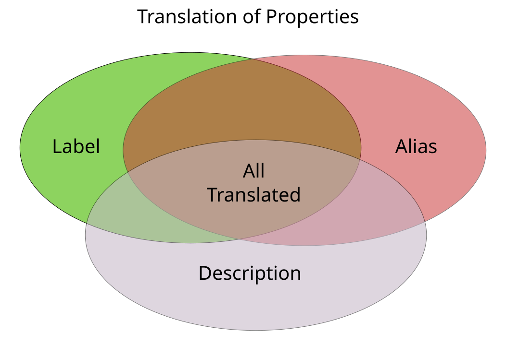

A visual interface for understanding and improving multilingual property development on Wikidata
Every Wikidata property carries three critical pieces of information that need translation: labels, descriptions, and aliases. A property may have none, some, or all of these in any given language — making it challenging to track progress across hundreds of languages.
WDProp queries the Wikidata Query Service in real time to surface live statistics, identify gaps, and guide contributors toward the properties and languages that need attention most.

Features
Language Coverage
Browse all supported languages and their translation statistics at a glance.
Translation Stats
Live counts of translated labels, descriptions, and aliases per language.
Multilingual Search
Find properties by keyword in any supported language instantly.
Language Compare
Compare translation progress across languages with animated bar charts.
Property Classes
Navigate properties organised by their class groupings and datatypes.
Provenance
Trace how translation information flows through property paths.
WikiProjects
Discover and explore active WikiProjects related to Wikidata properties.
Bookmarkable URLs
Every view supports URL parameters — share or bookmark any search or comparison.
Technology
Built with vanilla web technologies — no frameworks or bundlers required. Download the HTML files and run locally on any modern browser.
Research & Publications
WDProp: Web Application to Analyse Multilingual Aspects of Wikidata Properties
📄 Presentation slidesAnalyzing and Visualizing Translation Patterns of Wikidata Properties
📖 Read paperTowards Understanding and Improving Multilingual Collaborative Ontology Development in Wikidata
Collaborative Approach to Developing a Multilingual Ontology: A Case Study of Wikidata
📖 Read paperDemonstrations
How can I contribute to Wikidata properties? Introducing the WDProp tool.
Source Code
GitHub RepositoryTeam
Acknowledgements
- 🌍 Wikidata community
- 🛠️ Wikimedia Hackathon 2018